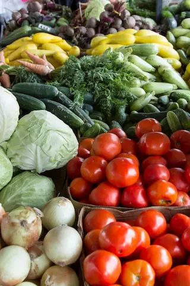
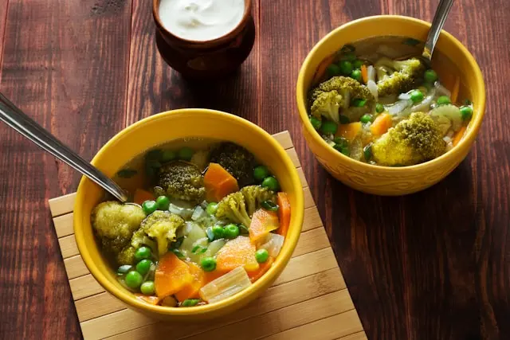
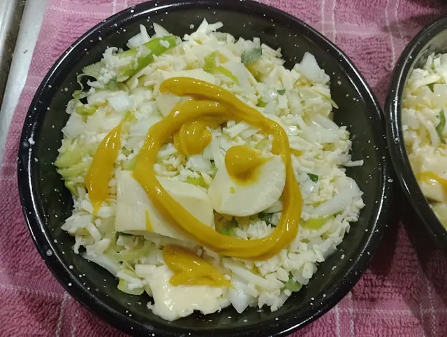
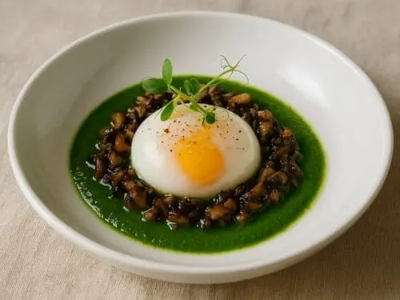

Lundi – “Retour des Capucins”




Description :
Menu inspiré du marché des Capucins, alliant produits frais,
recettes maison et options classiques ou véganes.
Entrées
Velouté de légumes de saison
Œuf parfait, crème de champignons
Plats
Pavé de merlu, beurre citronné
Risotto de légumes
Desserts
Compote de pomme
Cannelé bordelais
Conditions
Toute la journée – selon arrivage
Régime
Classique/Végé
Allergènes
Gluten, œufs, lactose, poisson
Stock
40
Thème
Hebdo
Nb pers min
2
Prix/pers
24 €